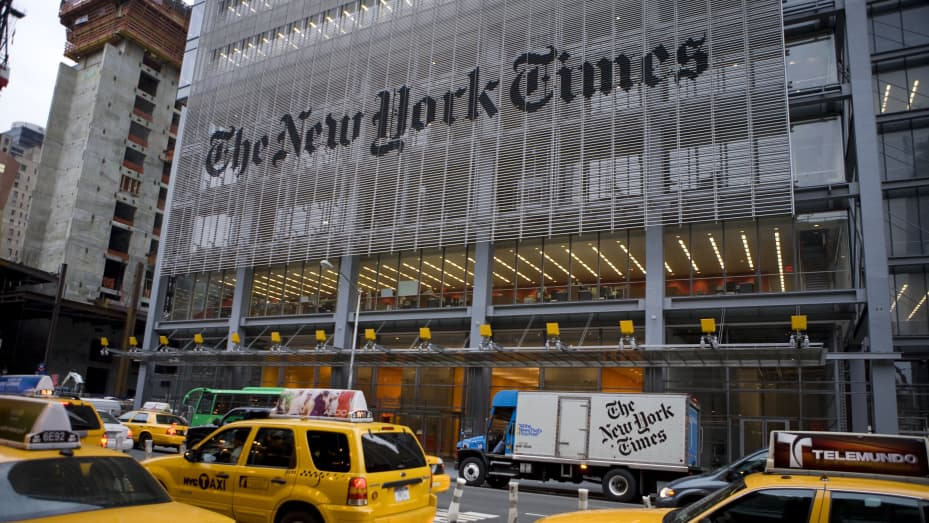

The New York Times (NYT) is a media organization founded in New York City and is well-known for its daily
newspaper. This website uses the NYT Top Stories API to get the current top World, US, Health, and
Technology news articles. A user can then choose to filter these news articles through keywords,
subsections, or time range. The purpose of filtering is to assist users in quickly finding news articles of
interest to them.
According to a session, data is fetched from the NYT API every hour to keep the displayed
results relevant.

The New York Times building by Jonathan Torgovnik
 TOP NEWS
TOP NEWS